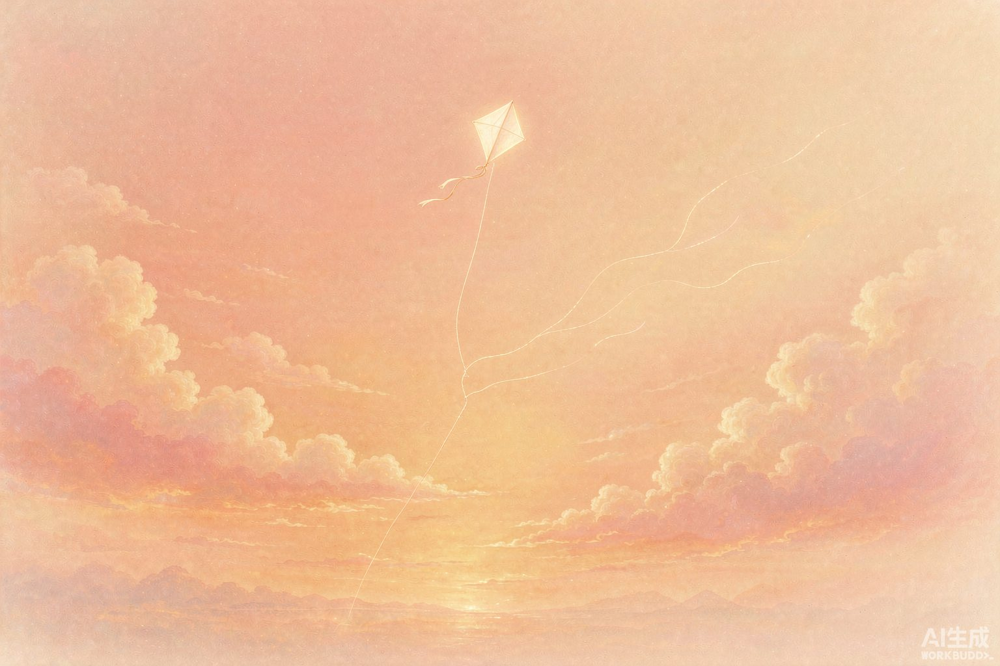
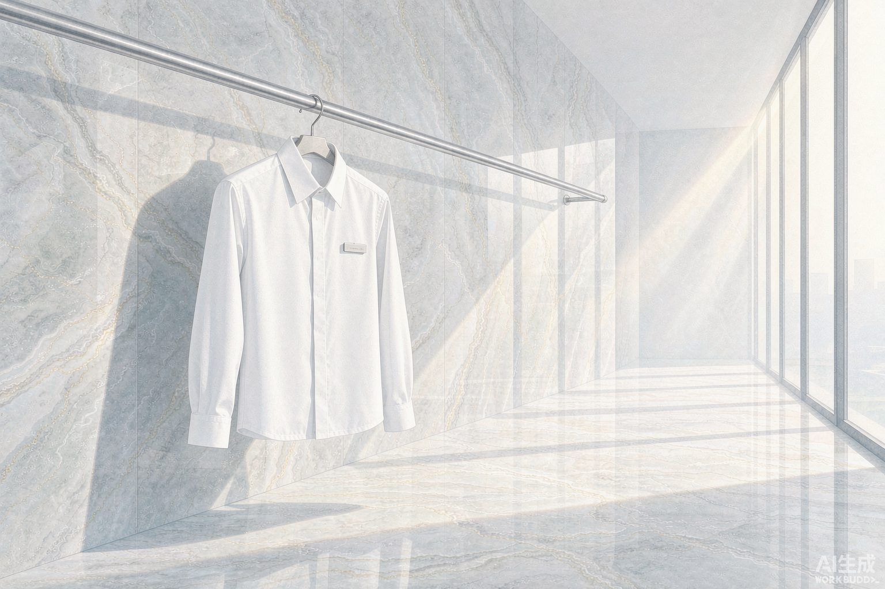
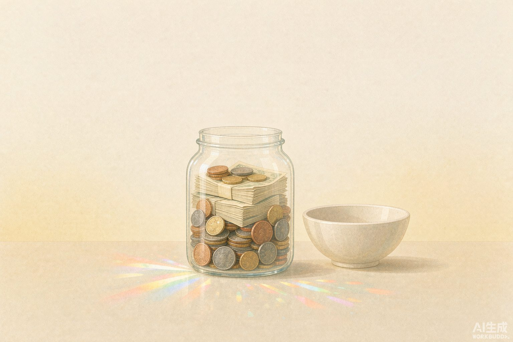
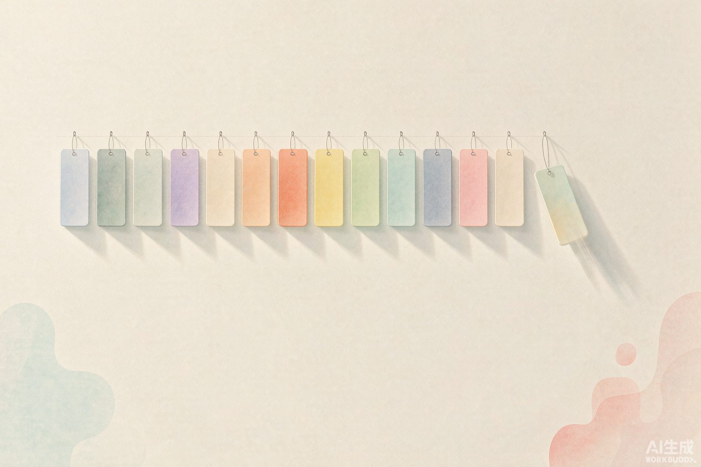
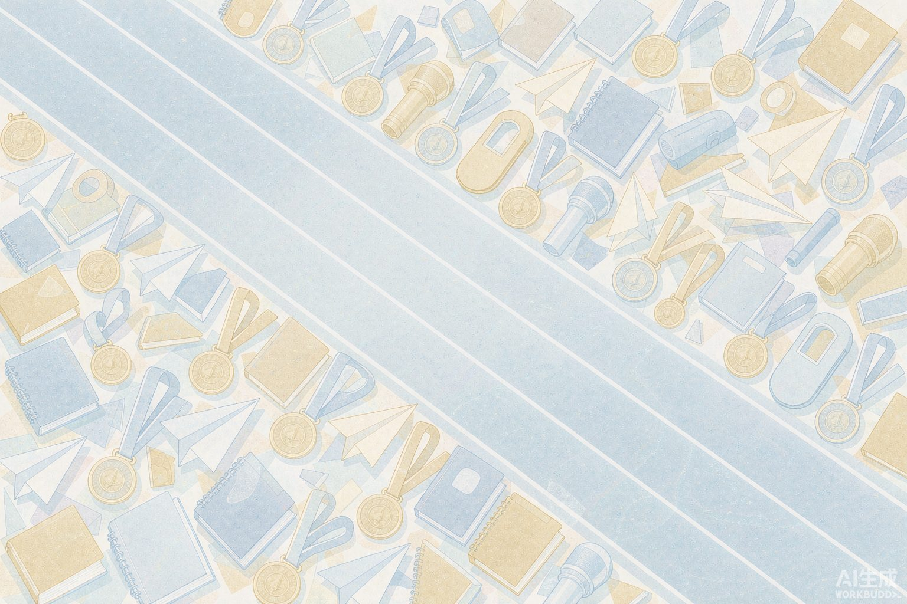
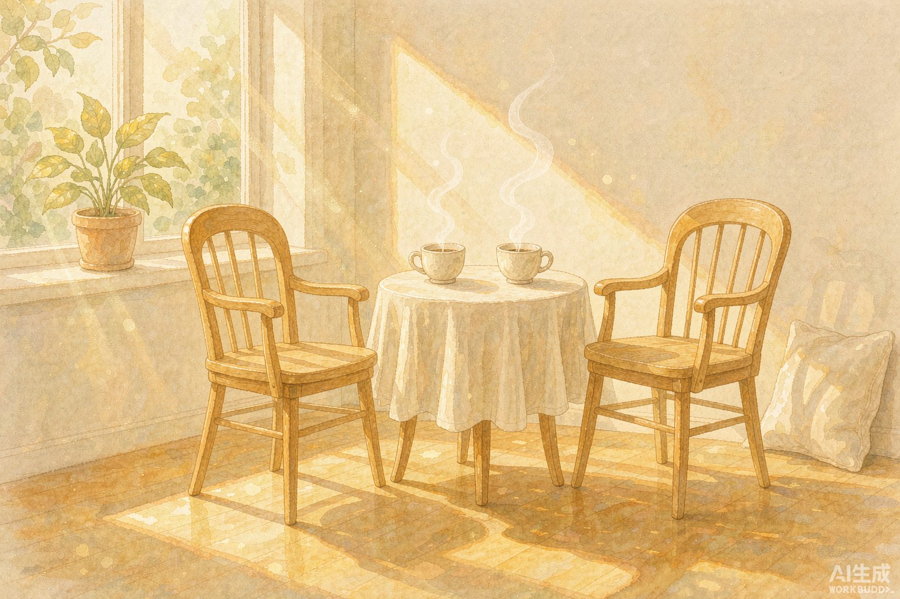
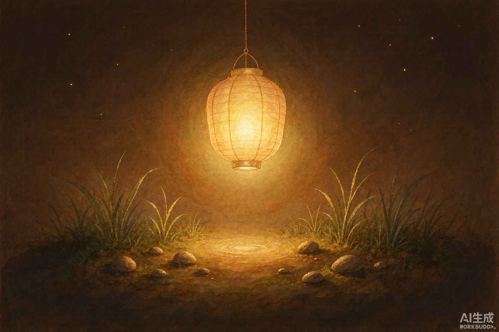
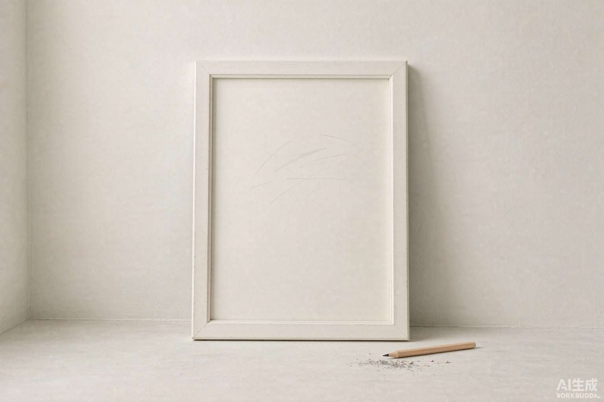

01
线断了，
但它飞得更高了
高考结束的那几天
那年夏天有一件事结束了，疼是真的疼。
可后来发生的每一件事，都是从那儿开始的。
我停过很多次。
但每次停下来，都是为了接着往前走。
这九张图里一个人都没有——可每一张都是我。

那年夏天有一件事结束了，疼是真的疼。
可后来发生的每一件事，都是从那儿开始的。

没什么宏大的理由，就是想靠自己。第一次穿制服在大酒店帮忙，也一家一家店去问招不招人。
那时候我就知道：我这种人，是会自己想办法的。

家教，小学教到高中。钱不算多，但每一次都是我自己挣的。
我喜欢"能靠自己"这件事本身。

院声乐队、院办公室、副班长，后来还进了校队阿卡贝拉。
现在回头看，那不是贪心——总得先摸过一遍，才知道哪块是自己的。

挑战杯、创新大赛、校歌手大赛，都去了，也拿了名次。
那段确实有点乱撞，但我认——每一件都变成了现在的底气。
一样一样取下来，最后只留下唱歌。
会做减法，和会开始一样重要。

遇到几个很好的人，第一次觉得"幸福"这个词能落在自己身上。
不是有人陪着就不空了——是先空下来，才看得见谁是真的。

以前断断续续地谈，说到底是在找一个人来填空。
现在我不再往外找了——我自己就能亮。

不是还没画完，是我留的。它可能是下一件作品，也可能是我还没想好的那几年。
画笔先搁这儿，随时拿起来。
我不是一路顺风的人。
但我也从来不是会往后退的人。
我允许自己停下。
休息完了，一定继续走。
那些困难、摔跤、绕远的路——那又怎样。
那也是我的，是独属于我的东西。
而且我相信，自己总有一天会成功。
我的潜力，还远没用完。